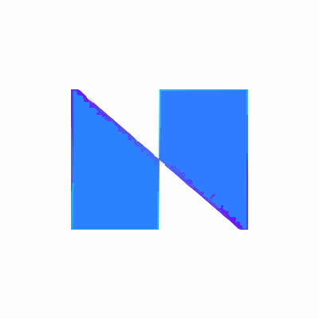

Hi, I’m Sai Pratheek Banda.
Senior Data Engineer — Azure · Databricks · PySpark · SQL · Automation

About
I’m a Senior Data Engineer who turns messy, operational data into reliable products—pipelines, KPI layers, and automation—primarily on Azure. I optimize for clarity, performance, and maintainability, then measure outcomes in saved hours, dollars, and happier users.
Timeline
-
-
Associate Software Engineer
 Nisum -
Business Analytics
-
Data Analyst
-
Data Analyst / Engineer
-
Senior Analytics Engineer
Projects
End-to-end case studies across data platforms, automation, AI, and cloud.
Featured highlights
Data Engineering
Integrated Customer Data Marketplace
Central KPI marketplace with governed definitions and ER modeling for supply-chain programs.
View projectAutomation & Data Apps
Exception Notifier (North America)
Automated exception communications with observability, saving ~$100k and 400 hours/year.
View projectCloud Engineering
Azure IaC + CI/CD
Repeatable infrastructure and deployment pipelines for dev and production environments.
View projectExplore by category
Data Engineering
Reliable pipelines, curated data layers, and KPI-ready modeling.
- Integrated Customer Data Marketplace — KPI model & publish layers
- High-Volume ETL to Insights — 1M+ rows/day to BI
Automation & Data Apps
Lightweight apps, automation helpers, and workflow accelerators.
- Automation Toolkit — SharePoint/Graph/SendGrid/Power BI clients
- Exception Notifier (North America) — templated comms & logging
Machine Learning & AI
Forecasting, sentiment signals, and insight extraction.
- Customer Temperature Clustering — k-means on feedback
- SCM Forward Looking Forecasting — demand signals
Cloud Engineering
Azure infrastructure, CI/CD, and cloud governance.
- IaC + CI/CD Standardization — Terraform & Actions
- GitHub Workflows Optimization — faster CI/CD loops
Skills
Technical Skills
Platforms & Tooling
Methods
Contact
Open to interesting problems and high-impact builds.